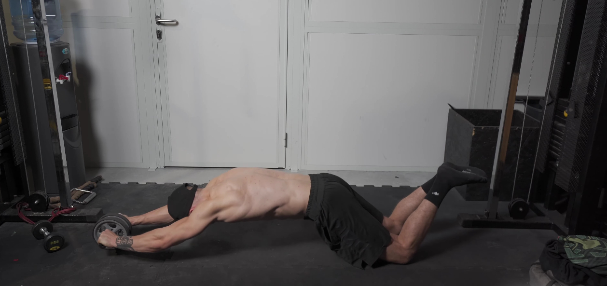
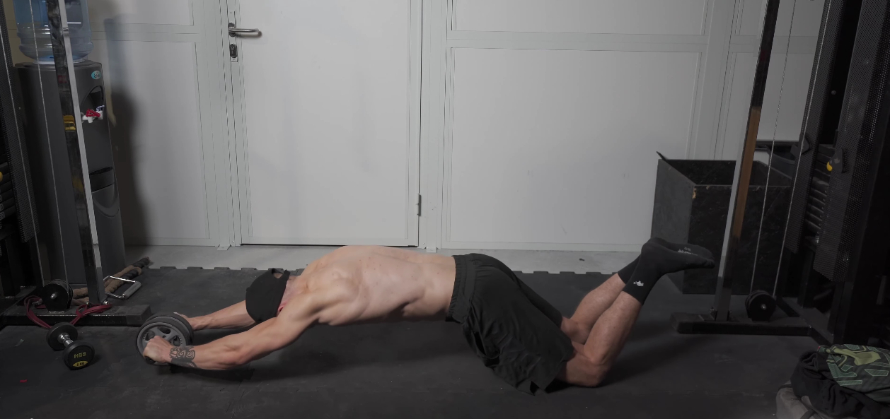

AB ROLLER
 

1. Złap w dłonie specjalne kółko (ab wheel) lub sztangę (z założonymi krążkami, które z łatwością będą się przesuwać), kolana pozostaw na macie.
2. Weź głęboki wdech i napnij brzuch oraz pośladki. Ściągnij łopatki.
3. Rozpocznij ruch wysuwania kółka/sztangi w przód, pochylając tułów, tak aby znalazł się w pozycji niemal równoległej do podłoża.
4. Utrzymująć maksymalne napięcie powróć do pozycji wyjściowej.